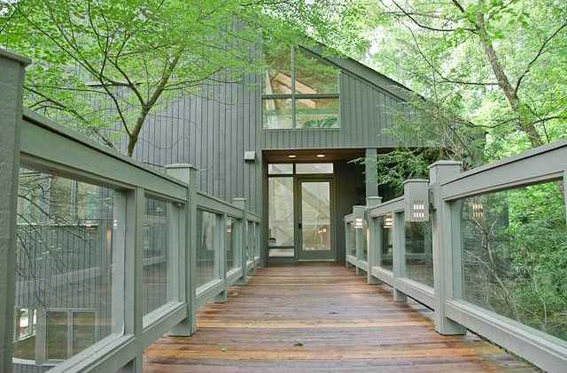

Making decisions with randomization tests
Lecture 22
Warm-up
While you wait…
Go to your
aeproject in RStudio.Make sure all of your changes up to this point are committed and pushed, i.e., there’s nothing left in your Git pane.
Click Pull to get today’s application exercise file: ae-18-duke-forest-bootstrap.qmd.
Wait till the you’re prompted to work on the application exercise during class before editing the file.
Announcements
Before Monday, Nov 25
- Bare minimum: Make substantial progress on your project write-up: Finish your introduction and exploratory data analysis (plots/summary statistics + their interpretations) + Write up methods you plan to use.
- Ideal: Start implementing the methods and get closer to answering your research question.
- Your work goes in
index.qmd– as of yesterday 50% of teams had not yet touched this file! - View (and review) your rendered project on your project website linked from the “About” section of your project repo.
From last time: Quantifying uncertainty
Packages
Data: Houses in Duke Forest
- Data on houses that were sold in the Duke Forest neighborhood of Durham, NC around November 2020
- Scraped from Zillow
- Source:
openintro::duke_forest

Goal: Use the area (in square feet) to understand variability in the price of houses in Duke Forest.
Modeling
df_fit <- linear_reg() |>
fit(price ~ area, data = duke_forest)
tidy(df_fit) |>
kable(digits = 2) # neatly format table to 2 digits| term | estimate | std.error | statistic | p.value |
|---|---|---|---|---|
| (Intercept) | 116652.33 | 53302.46 | 2.19 | 0.03 |
| area | 159.48 | 18.17 | 8.78 | 0.00 |
Confidence interval for the slope
A confidence interval will allow us to make a statement like “For each additional square foot, the model predicts the sale price of Duke Forest houses to be higher, on average, by $159, plus or minus X dollars.”
Slopes of bootstrap samples
Fill in the blank: For each additional square foot, the model predicts the sale price of Duke Forest houses to be higher, on average, by $159, plus or minus ___ dollars.

Slopes of bootstrap samples
Fill in the blank: For each additional square foot, we expect the sale price of Duke Forest houses to be higher, on average, by $159, plus or minus ___ dollars.

Confidence level
How confident are you that the true slope is between $0 and $250? How about $150 and $170? How about $90 and $210?

95% confidence interval

- A 95% confidence interval is bounded by the middle 95% of the bootstrap distribution
- We are 95% confident that for each additional square foot, the model predicts the sale price of Duke Forest houses to be higher, on average, by $90.43 to $205.77.
ae-18-duke-forest-bootstrap
Go to your ae project in RStudio.
If you haven’t yet done so, make sure all of your changes up to this point are committed and pushed, i.e., there’s nothing left in your Git pane.
If you haven’t yet done so, click Pull to get today’s application exercise file: ae-18-duke-forest-bootstrap.qmd.
Work through the application exercise in class, and render, commit, and push your edits.
Computing the CI for the slope I
Calculate the observed slope:
observed_fit <- duke_forest |>
specify(price ~ area) |>
fit()
observed_fit# A tibble: 2 × 2
term estimate
<chr> <dbl>
1 intercept 116652.
2 area 159.Computing the CI for the slope II
Take 100 bootstrap samples and fit models to each one:
set.seed(1120)
boot_fits <- duke_forest |>
specify(price ~ area) |>
generate(reps = 100, type = "bootstrap") |>
fit()
boot_fits# A tibble: 200 × 3
# Groups: replicate [100]
replicate term estimate
<int> <chr> <dbl>
1 1 intercept 47819.
2 1 area 191.
3 2 intercept 144645.
4 2 area 134.
5 3 intercept 114008.
6 3 area 161.
7 4 intercept 100639.
8 4 area 166.
9 5 intercept 215264.
10 5 area 125.
# ℹ 190 more rowsComputing the CI for the slope III
Percentile method: Compute the 95% CI as the middle 95% of the bootstrap distribution:
Precision vs. accuracy
If we want to be very certain that we capture the population parameter, should we use a wider or a narrower interval? What drawbacks are associated with using a wider interval?
. . .

Precision vs. accuracy
How can we get best of both worlds – high precision and high accuracy?
Changing confidence level
How would you modify the following code to calculate a 90% confidence interval? How would you modify it for a 99% confidence interval?
Changing confidence level
## confidence level: 90%
get_confidence_interval(
boot_fits, point_estimate = observed_fit,
level = 0.90, type = "percentile"
)# A tibble: 2 × 3
term lower_ci upper_ci
<chr> <dbl> <dbl>
1 area 104. 212.
2 intercept -24380. 256730.## confidence level: 99%
get_confidence_interval(
boot_fits, point_estimate = observed_fit,
level = 0.99, type = "percentile"
)# A tibble: 2 × 3
term lower_ci upper_ci
<chr> <dbl> <dbl>
1 area 56.3 226.
2 intercept -61950. 370395.Recap
Population: Complete set of observations of whatever we are studying, e.g., people, tweets, photographs, etc. (population size = \(N\))
Sample: Subset of the population, ideally random and representative (sample size = \(n\))
Sample statistic \(\ne\) population parameter, but if the sample is good, it can be a good estimate
Statistical inference: Discipline that concerns itself with the development of procedures, methods, and theorems that allow us to extract meaning and information from data that has been generated by stochastic (random) process
We report the estimate with a confidence interval, and the width of this interval depends on the variability of sample statistics from different samples from the population
Since we can’t continue sampling from the population, we bootstrap from the one sample we have to estimate sampling variability
Why do we construct confidence intervals?
To estimate plausible values of a parameter of interest, e.g., a slope (\(\beta_1\)), a mean (\(\mu\)), a proportion (\(p\)).
What is bootstrapping?
Bootstrapping is a statistical procedure that resamples(with replacement) a single data set to create many simulated samples.
We then use these simulated samples to quantify the uncertainty around the sample statistic we’re interested in, e.g., a slope (\(b_1\)), a mean (\(\bar{x}\)), a proportion (\(\hat{p}\)).
What does each dot on the plot represent?
Note: The plot is of a bootstrap distribution of a sample mean.
- Resample, with replacement, from the original data
- Do this 20 times (since there are 20 dots on the plot)
- Calculate the summary statistic of interest in each of these samples
Bootstrapping for categorical data
specify(response = x, success = "success level")calculate(stat = "prop")
Bootstrapping for other stats
calculate()documentation: infer.tidymodels.org/reference/calculate.htmlinfer pipelines: infer.tidymodels.org/articles/observed_stat_examples.html
Hypothesis testing
Hypothesis testing
A hypothesis test is a statistical technique used to evaluate competing claims using data
Null hypothesis, \(H_0\): An assumption about the population. “There is nothing going on.”
Alternative hypothesis, \(H_A\): A research question about the population. “There is something going on”.
. . .
Note: Hypotheses are always at the population level!
Setting hypotheses
Null hypothesis, \(H_0\): “There is nothing going on.” The slope of the model for predicting the prices of houses in Duke Forest from their areas is 0, \(\beta_1 = 0\).
Alternative hypothesis, \(H_A\): “There is something going on”. The slope of the model for predicting the prices of houses in Duke Forest from their areas is different than, \(\beta_1 \ne 0\).
Hypothesis testing “mindset”
Assume you live in a world where null hypothesis is true: \(\beta_1 = 0\).
Ask yourself how likely you are to observe the sample statistic, or something even more extreme, in this world: \(P(b_1 \leq 159.48~or~b_1 \geq 159.48 | \beta_1 = 0)\) = ?
Hypothesis testing as a court trial
Null hypothesis, \(H_0\): Defendant is innocent
Alternative hypothesis, \(H_A\): Defendant is guilty
. . .
- Present the evidence: Collect data
. . .
-
Judge the evidence: “Could these data plausibly have happened by chance if the null hypothesis were true?”
- Yes: Fail to reject \(H_0\)
- No: Reject \(H_0\)
Hypothesis testing framework
Start with a null hypothesis, \(H_0\), that represents the status quo
Set an alternative hypothesis, \(H_A\), that represents the research question, i.e. what we’re testing for
-
Conduct a hypothesis test under the assumption that the null hypothesis is true and calculate a p-value (probability of observed or more extreme outcome given that the null hypothesis is true)
- if the test results suggest that the data do not provide convincing evidence for the alternative hypothesis, stick with the null hypothesis
- if they do, then reject the null hypothesis in favor of the alternative
Calculate observed slope
… which we have already done:
observed_fit <- duke_forest |>
specify(price ~ area) |>
fit()
observed_fit# A tibble: 2 × 2
term estimate
<chr> <dbl>
1 intercept 116652.
2 area 159.Simulate null distribution
View null distribution
null_dist# A tibble: 200 × 3
# Groups: replicate [100]
replicate term estimate
<int> <chr> <dbl>
1 1 intercept 547294.
2 1 area 4.54
3 2 intercept 568599.
4 2 area -3.13
5 3 intercept 561547.
6 3 area -0.593
7 4 intercept 526286.
8 4 area 12.1
9 5 intercept 651476.
10 5 area -33.0
# ℹ 190 more rowsVisualize null distribution
null_dist |>
filter(term == "area") |>
ggplot(aes(x = estimate)) +
geom_histogram(binwidth = 15)Visualize null distribution (alternative)
visualize(null_dist) +
shade_p_value(obs_stat = observed_fit, direction = "two-sided")Get p-value
null_dist |>
get_p_value(obs_stat = observed_fit, direction = "two-sided")Warning: Please be cautious in reporting a p-value of 0. This result is an
approximation based on the number of `reps` chosen in the
`generate()` step.
ℹ See `get_p_value()` (`?infer::get_p_value()`) for more information.
Please be cautious in reporting a p-value of 0. This result is an
approximation based on the number of `reps` chosen in the
`generate()` step.
ℹ See `get_p_value()` (`?infer::get_p_value()`) for more information.# A tibble: 2 × 2
term p_value
<chr> <dbl>
1 area 0
2 intercept 0Make a decision
Based on the p-value calculated, what is the conclusion of the hypothesis test?